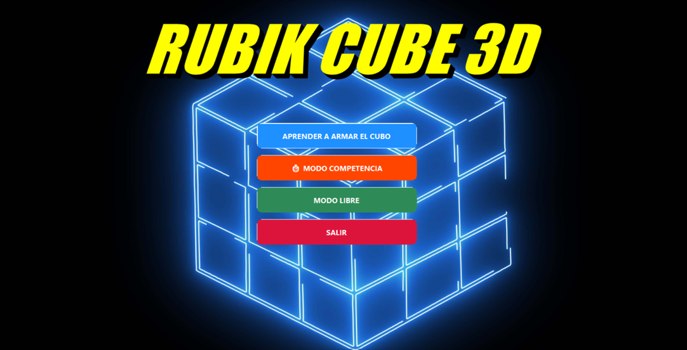
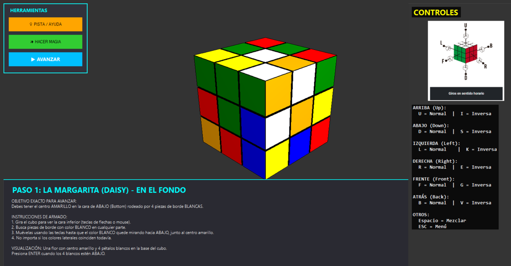
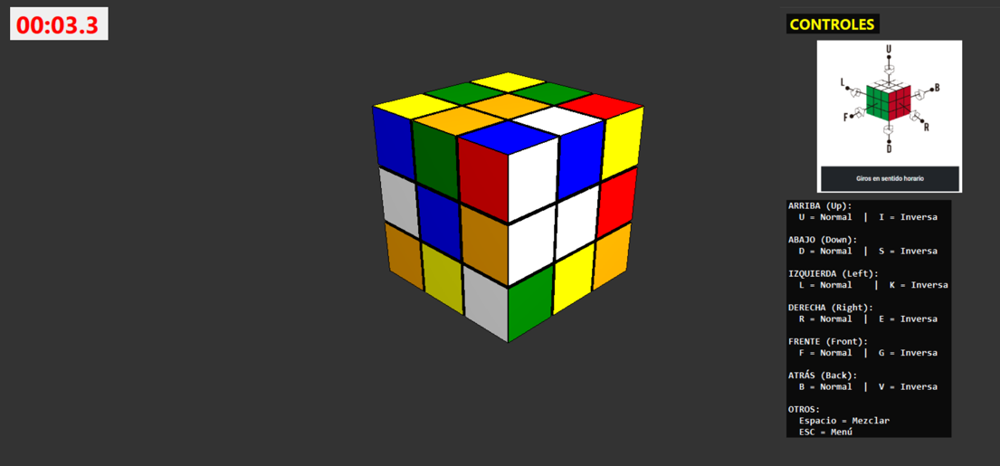
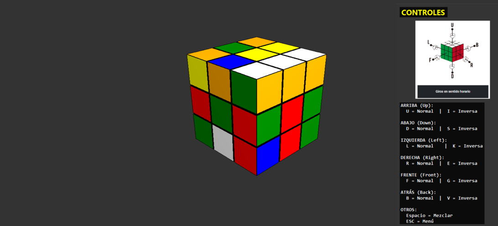

Esta aplicación 3D ofrece una experiencia completa para aprender a armar el cubo de Rubik, practicar en modo libre y competir contra el tiempo. Desarrollada con C# y OpenGL, presenta un entorno visual inmersivo y controles intuitivos.
El modo aprendizaje guía al usuario paso a paso con animaciones y explicaciones sobre los movimientos básicos y algoritmos. El modo competencia desafía al jugador con preguntas de cultura general y programación: cada respuesta correcta suma tiempo, cada error resta, creando una experiencia dinámica y educativa.
También incluye un modo libre donde se puede explorar el cubo sin restricciones, ideal para practicar o simplemente disfrutar de la interacción con el modelo 3D.



